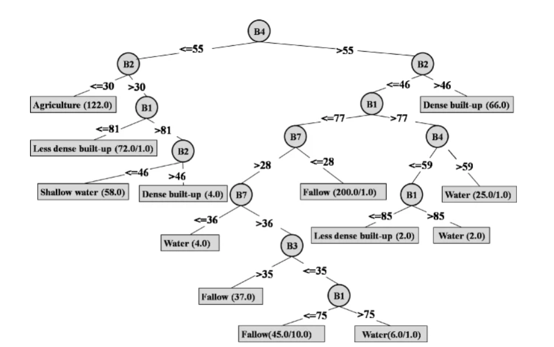
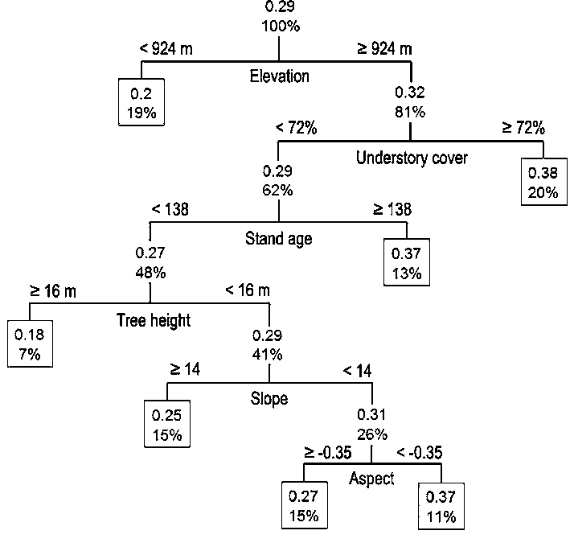
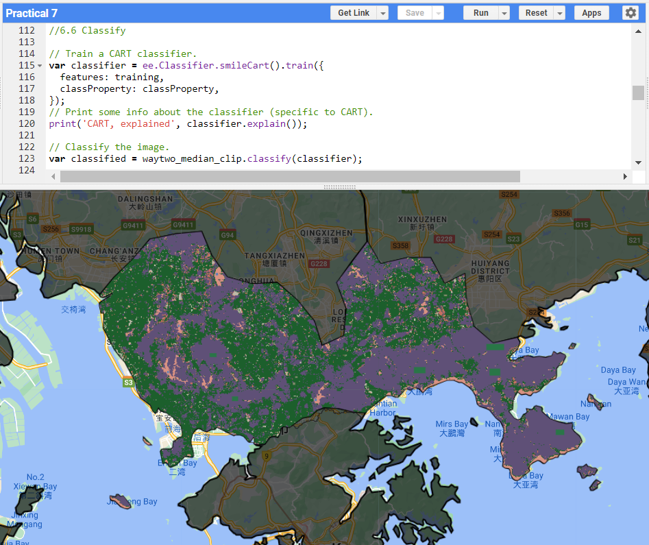
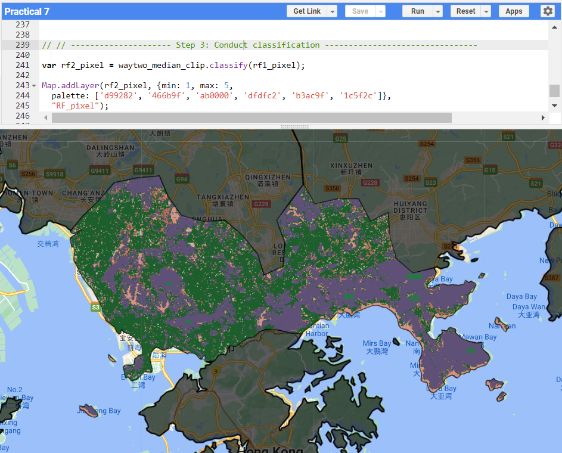

6 Classification I
In the first of a two-part lecture series on classification, we covered how classified data is used and how to classify remotely sensed data. This included machine learning concepts related to Classification and Regression Trees (CART), Random Forests, Support Vector Machine (SVM) and Overfitting. In terms of classification processes, we covered supervised (e.g. maximum likelihood, parallelepiped, nearest neighbour) vs. unsupervised classification (k-means, ISODATA).
6.1 Summary
CART refers to “Decision Tree algorithms that can be used for classification or regression predictive modeling problems” (Brownlee 2020). CART is particularly relevant for remote sensing in classifying pixels into same groups based on their similarities. While CART shares some similarities with clustering analysis in terms of their objectives, it differs in that CART focuses more on predicting future datasets rather than explaining the data (Bakker 2015). CART is also hierarchical, as it is top-down and splits pixels into their groups, while trying to minimize the Gini impurity for categorical data, which measures the likelihood of new data being misclassified if it was labeled randomly and independently (Karabiber, n.d.), or mean squared error (MSE) for continuous data, which measures the accuracy of the tree (Minitab, n.d.). This process continues until a specific stop condition has been met, such as max tree depth or minimal instances in a node, thus producing a decision-tree structure (Yadav 2019). On the other hand, clustering is agglomerative in moving from the bottom-up in sorting pixels into a set of clusters (Bakker 2015). An example of the decision tree can be seen below, starting from the root node and splitting into internal nodes until it reaches the lowest level which is the leaf node.
CART Decision Tree Concept. Source: GeeksforGeeks (2023)
An example of the classification tree in remote sensing is shown below where B4 (NIR) is used initially for splitting before being split by B2, followed by other bands. This allows for classification of different land use land cover and the leaf nodes are discrete values of land use types such as agriculture, less vs. dense built up areas, etc.

Classification Tree of Remote Sensing Image. Source: (Sharma, Ghosh, and JOSHI 2013)
An example of the regression tree is shown below where elevation, followed by understory cover, stand age, tree height, slope, aspect are used to calculate the percentage or burnt severity of forest areas. Compared to the classification tree, the leaf nodes would take the continuous values instead.

Regression Tree of Remote Sensing Image. Source: Wu et al. (2013)
The advantages of CART include that the algorithm assists in the splitting and is easy to interpret from the flowchart. It can also be applied to data which may not be linear or data that is continuous or categorical. However, it has disadvantages, such as being prone to overfitting on the training data. This can be mitigated by pruning the tree or simplifying it by removing sections of the tree that are not critical to classification. For more advantages and disadvantages, read Inside Learning Machines (2023).
Overall, as decision trees may not be best with new data, random forest algorithm of creating multiple decision tress instead of one, would be more useful.
6.2 Application
This week’s practical brings us to Shenzhen where we classified data using CART and Random Forest. We also utilised a train test split to train the model and test its accuracy on the test data. The results are as below.

CART classification algorithm for Shenzhen (Green=Forest, Purple=Urban, Tan=Water, Red=Grass). Source: Author’s Own
As mentioned earlier, CART has an issue of overfitting. Random Forest attempts to address this issue by creating multiple decision trees based on random subsets of the training data (with replacement), with the final tree formed through voting or averaging (Belgiu and Drăguţ 2016). This variability improves the model’s classification performance and ability to generalise to new data.

Random Forest algorithm for Shenzhen (Green=Forest, Purple=Urban, Tan=Water, Red=Grass). Source: Author’s Own
It is a bit hard to see the difference in results but some of the grass areas are now classified correctly instead of forest. The validation overall accuracy is approximately 99.4% which represents the accuracy of the model on the testing dataset.
Random Forest Algorithm has been applied to Sentinel 2 Images to study fire severity in south-eastern Australia (Gibson et al. 2020). The study applied the algorithm for different indices such as differenced normalised burn ratio (dNBR), relativised change in fractional cover (RdFCT) and differenced normalised differenced vegetation index (dNDVI). The results were compared to aerial photograph interpretations (API) which revealed that the fractional cover indices were more accurate in differentiating burnt from non-burnt areas. However, accuracy varied across canopy types, with higher accuracy to when the entire crown was completely scorched as compared to when only the understory was burnt. This is expected as optical sensors face challenges in detecting burnt understory especially with higher canopy cover. This study shows that besides the inherent limitations of random forest (e.g. overfitting, computationally intensive), it is important to recognise the limitations of the dataset as well.
Random Forest has been used with remote sensing data for prediction purposes as demonstrated in a study that predicted droughts on a five-day period in East Asia (Park et al. 2018). The study used data from MODIS was used to calculate Land Surface Temperature (LST) and Normalised Difference Vegetation Index (NDVI), precipitation data from Goddard Earth Sciences Data and Information Centre and soil moisture from the European Space Agency, and real-time multivariate Madden-Julian oscillation (MJO) indices from the Australian Bureau of Meteorology. The maps exhibited spatial patterns similar to the actual drought index maps which is a step-in drought monitoring and warning systems. This could provide decision-makers with accurate and timely information to implement relevant measures.

Comparison of drought conditions between actual Vegetation Supply-Demand Index (VSDI) and predicted VSDIs from two models (with and without Madden-Julian Oscillation) in 2011. Source: Park et al. (2018)
6.3 Reflection
During my undergraduate, I did supervised classification in ENVI using maximum likelihood classification which I found to be a straightforward practical due to the intuitive interface. On hindsight, I better understand its limitations such as the requirement regarding knowing the probability of a pixel belonging to a specific land type. While CART and random forest are powerful tools for classification, the process can feel like a black box as we are unable to see what happens during the entire process from train-test split to model generation.
Additionally, many studies extend beyond classification alone, often combining classification with other methods or tools such as change detection for deforestation or prediction of natural hazards. With deeper understanding of how to utilise these tools and interpret their results, they can become useful tools to inform decision-makers.